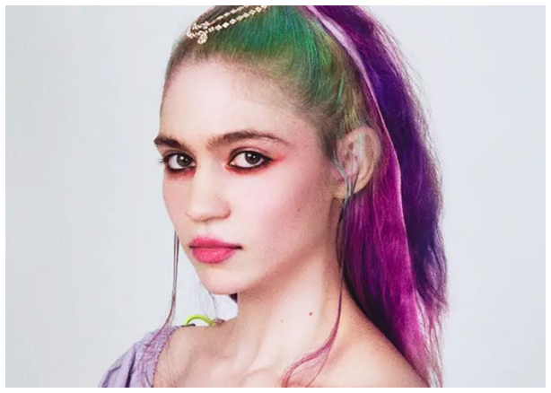
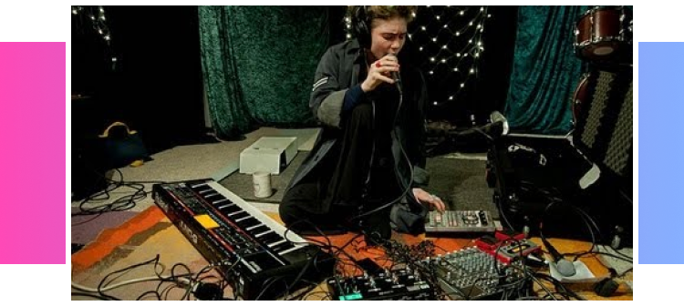

Une artiste confrontée aux doubles standards, elle s’exprime sur les violences sexuelles qu’elle subit dans une industrie sexiste.
Grimes s’exprime sur tumblr au sujet de cette problématique.
L’artiste ne veut pas avoir à remettre en question ses principes afin d’exercer sa profession.
Elle défend son art et son identité artistique dans son post. Grimes dit en avoir assez de subir des attouchements lors de ses tournées ou dans la rue, juste parce qu’elle est perçue comme un objet existant seulement pour la satisfaction du public.
Grimes s’exprime également sur le fait qu’elle se sent constamment rabaissée par des conseils déplacés. La chanteuse canadienne ne supporte plus quand des hommes, qu’ils fassent partie de l'industrie ou non, lui proposent de “l’aider” sans qu’elle leur ait demandé quoi que ce soit. Elle voit cela comme un manque de respect, comme si elle n’était pas capable de réussir sans leur aide. Pour l’artiste, c’est comme s’ils insinuaient que le fait d’être une femme l’empêchait d’utiliser des outils complexes. Elle rajoute qu’elle n’a jamais vu cela se produire avec ses amis du sexe opposé.
“Je ne supporte plus d’être considérée comme “basique” parce que j’aime la musique pop et la mode, comme si le fait d’aimer ces choses me rendait moins humaine.”
Grimes est extrêmement déçue que ses discours féministes soient perçus comme “anti-homme”. L’artiste pop est attristée que son désir d’être traité comme égale à un homme soit interprété comme une haine envers eux. Grimes préférerait que son discours soit perçu comme une simple volonté d’être respectée. Elle évoque notamment ses 4 frères, son père et ses amis dont elle est très proche. L’artiste explique qu’elle ne hait pas tous les hommes. D’ailleurs, Grimes ne croit pas que tous les hommes soient sexistes ou qu’ils se comportent de la même manière que ceux dont elle a parlé précédemment. Bien que Grimes soit souvent qualifiée de "mignonne" ou d’autres termes semblables, elle exprime son désaccord avec ces appellations, peu importe l’aspect positif des termes. Grimes conteste en citant les définitions des termes et en trouvant un côté négatif à leur utilisation. L’artiste est épuisée de constater que son public utilise trop souvent ces mots.
“Ce n’est pas parce que c’est récurrent que ça doit être accepté.”
Pour conclure, l’artiste exprime son amour pour ses fans et toutes les personnes qui la soutiennent. Elle ajoute qu’elle aime son travail et qu’elle ne le changerait pour rien au monde. Grimes nous explique qu’elle a souhaité réaliser cet entretien afin de s’impliquer dans le combat féministe en tant qu’artiste et pour les femmes. Grimes est une artiste accomplie et elle souhaite être respectée comme telle. Elle vous invite à aller écouter ses albums Visions (2012) et Miss Anthropocene (2020) afin d’avoir un avant goût de son univers, s’il vous est totalement inconnu. Notamment, son titre intitulé “Kill V. Maim” qui évoque brièvement le sexisme dont elle est victime.